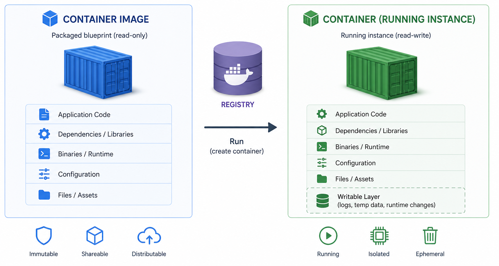

Docker is the most widely used container runtime. It provides the command-line tools, the image format, and the registry infrastructure that make containers practical. Before looking at commands, it helps to understand the four core concepts.

| Concept | What it is | Analogy |
|---|---|---|
| Image | A read-only, immutable template containing a filesystem snapshot and metadata. Once built, an image never changes — running it always produces the same starting state. Built from a Dockerfile. Stored in a registry. | A class definition — describes the structure, but is not itself running. |
| Container | A running instance of an image. Has its own writable filesystem layer on top of the image. | An instance of the class — alive, consuming resources, doing work. |
| Registry | A server that stores and distributes images. Docker Hub is the default public registry. | A package repository (like PyPI or npm) but for whole container images. |
| Layer | Each instruction in a Dockerfile creates a filesystem layer. Layers are cached and shared between images that share a common base. | Git commits stacked on top of each other — each adds a delta. |
# Images
$ docker pull ubuntu:22.04 # download image from Docker Hub
$ docker images # list locally stored images
$ docker rmi ubuntu:22.04 # remove a local image
# Containers
$ docker run ubuntu:22.04 echo "hello" # run a command and exit
$ docker run --rm ubuntu:22.04 ls /usr/bin # --rm: delete container on exit
$ docker run -it ubuntu:22.04 bash # interactive shell inside container
# Inspecting
$ docker ps # list running containers
$ docker ps -a # all containers including stopped ones
# Cleanup
$ docker rm <container-id> # remove a stopped container
$ docker rm $(docker ps -aq) # remove all stopped containers| Flag | Meaning |
|---|---|
--rm | Automatically delete the container when it exits. Use for one-off commands to avoid accumulating stopped containers. |
-it | Two flags combined: -i (keep stdin open) and -t (allocate a pseudo-terminal). Together they give you an interactive shell. |
-d | Detached mode — run the container in the background and print its ID. |
-p 8080:80 | Publish a port: map host port 8080 to container port 80. |
-v ./data:/data | Mount a host directory into the container so data persists after exit. |
There are two common ways to use containers during development:
| Style | When to use | How it works |
|---|---|---|
| Deployment-style | Testing the final packaged app; CI/CD; production | docker build bakes your source code into the image. Run with docker run myapp. Every code change requires a rebuild. |
| Development-style | Active development — you want to edit code without rebuilding | Bind-mount your source directory into the container with -v. The container sees your live files; no rebuild needed on each edit. |
The development-style command mounts the current directory as /app inside the container and runs the app directly:
$ docker run --rm -it \
-p 8000:8000 \
-v "$PWD":/app \
-w /app \
python:3.12-slim \
sh -lc "python3 -m pip install --no-cache-dir -r requirements.txt && python3 app.py"Flag breakdown:
-v "$PWD":/app — bind-mount: your current directory on the host becomes /app inside the container. Edits on the host are immediately visible inside.-w /app — set the working directory inside the container to /app.-p 8000:8000 — publish port 8000 so you can reach the app from your browser at localhost:8000.sh -lc "…" at the end installs dependencies and runs the app in one step — no Dockerfile required.docker rm removes a container (a stopped running instance). docker rmi removes an image (the template). You cannot remove an image while a container that uses it still exists, even if that container is stopped.
docker run ubuntu:22.04 cat /etc/os-release. Notice it prints Ubuntu — regardless of your host OS. Then run docker ps -a and observe the stopped container. Clean it up with docker rm <id>, or rerun with --rm to skip the cleanup step.
docker run ubuntu:22.04 bash and it exits immediately with no output or error. Why? (Hint: bash reads commands from stdin. When there is no terminal attached, it finds no input and exits immediately with code 0 — it has not crashed.) What two flags would give you an interactive shell?
FIT2109 · Week 6 · Monash University · by Dr. Yongqiang Tian